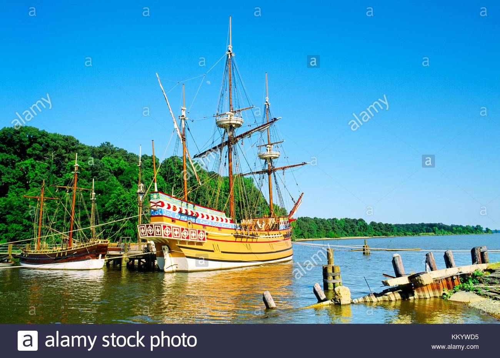

The susan B.constant was flagship of the fleet of three small ships that brought settlers to Jamestown, the first successful English colony in the new world. This is a replica housed near Jamestown,virginia.